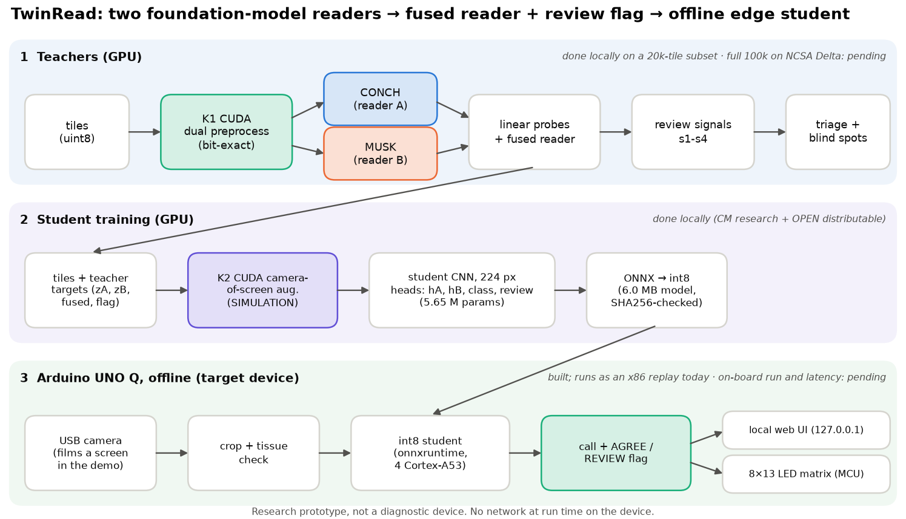
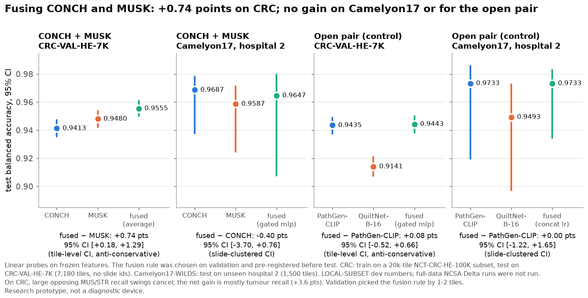
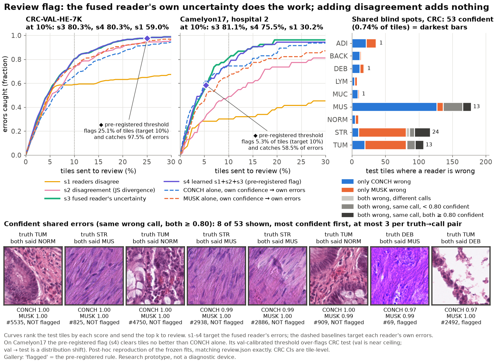
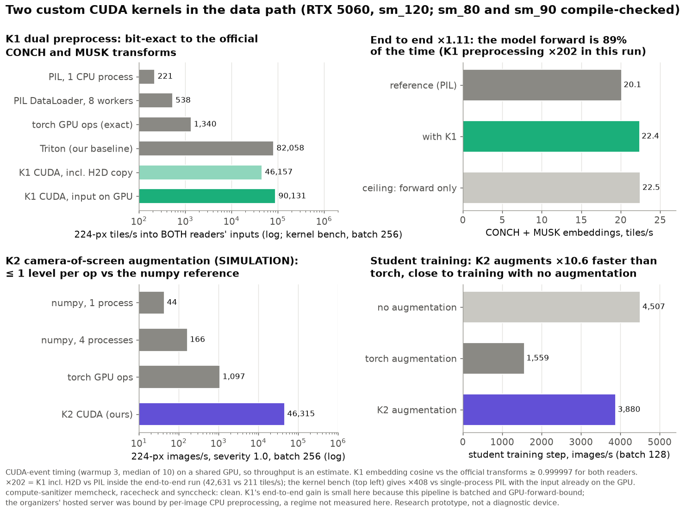
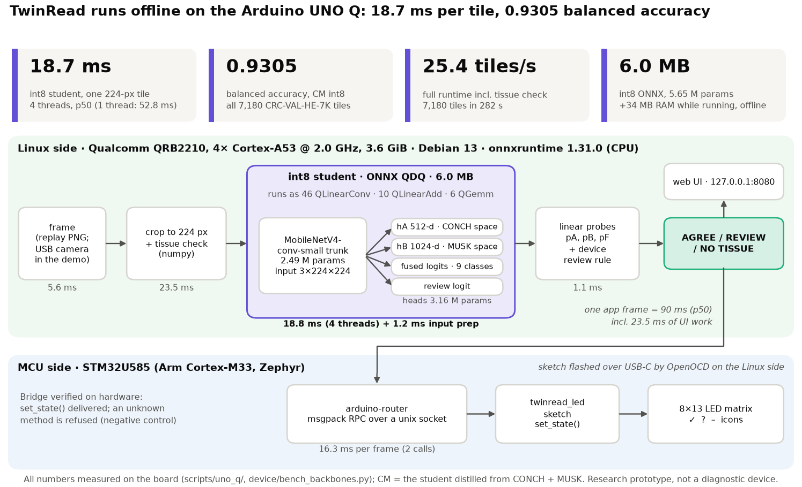
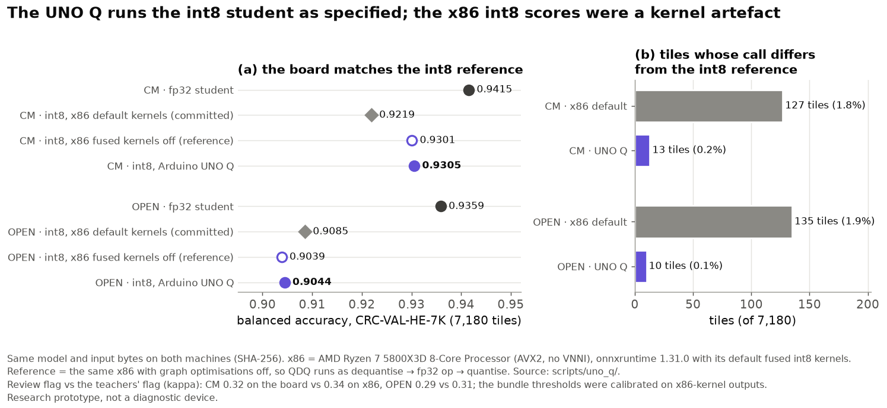
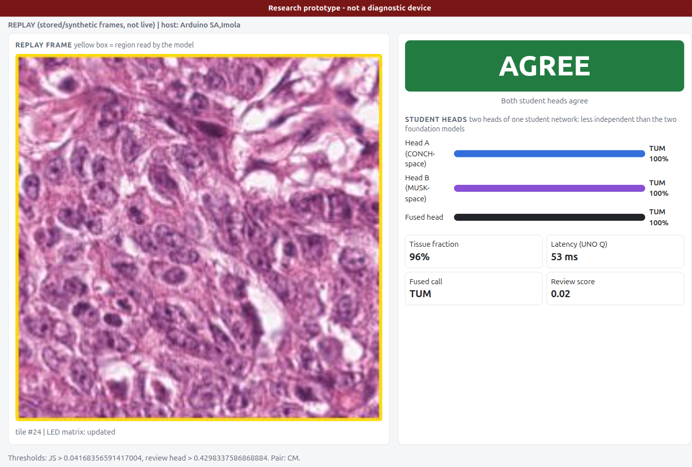

Two pathology foundation models as two independent readers: fused for accuracy, flagged for review, and shrunk to run offline on an Arduino UNO Q.
Noah Zhang · University of Illinois Urbana-Champaign
2026 Ashby Prize in Computational Science Hackathon · NCSA and the Cancer Center at Illinois
Linear probes on frozen features, CRC-VAL-HE-7K, 9 tissue classes.
Source: results/cm_local/CM/crc/reader_error_overlap.json
Fusing the two readers leaves 239 errors, fewer than either reader alone.
Treat CONCH and MUSK as two independent readers of every H&E tile and fuse them, so each covers the other's gaps.
Within a fixed review budget, send the tiles the fused reader is least sure about for a human second look. Count the blind spots both readers share.
Distil both readers into one 6 MB int8 model and run it on a USB-powered Arduino UNO Q, for settings with no scanner, no server and no reliable connectivity.
Every design choice (fusion rule, review threshold) is made on validation data and pre-registered before any test label is read.

Balanced accuracy, CRC-VAL-HE-7K, 7,180 tiles, 9 classes.
+0.74 points over the best single reader (95% CI +0.18 to +1.29, tile-level). Most of the gain is tumour recall, +3.6 points.
Where it does not help: on Camelyon17 (tumour vs normal, unseen hospital) CONCH alone is already at 0.9687 and fusion gives no gain (0.9647). An open-model control pair gains nothing on either dataset. The gain is real but small and dataset-dependent.

The same budget catches 74.1% with MUSK checking itself and 66.0% with CONCH. Disagreement between the two readers alone catches 59.0%: the value comes from a better-calibrated fused reader, not from disagreement itself.
Shared blind spots: 53 tiles (0.74%) are called confidently wrong by both readers, mostly muscle vs stroma. No disagreement signal can catch those.



Arduino UNO Q: four Cortex-A53 cores, 3.6 GiB RAM, USB-powered, Debian 13, onnxruntime on CPU.
The full app loop (frame, tissue check, student, flag, LED) processes 25.4 tiles/s. The LED-matrix sketch is flashed and the Bridge RPC to the MCU is verified.
Every number on this slide was measured on the board.

On x86, onnxruntime's default fused int8 kernels scored the CM student at 0.9219. The board gives 0.9305, and so does x86 with those kernels switched off: 13 of 7,180 calls differ between the board and that reference.
The board's review flag matches the teachers' flag at kappa 0.32. The device's two "readers" are two heads of one network, so they are less independent than CONCH and MUSK.

The app on the UNO Q: a stored CRC tile, both student heads, the fused call and AGREE / REVIEW.
Lu MY, Chen B, Williamson DFK, et al. A visual-language foundation model for computational pathology (CONCH). Nature Medicine 2024. doi:10.1038/s41591-024-02856-4
Xiang J, Wang X, Zhang X, et al. A vision-language foundation model for precision oncology (MUSK). Nature 2025. doi:10.1038/s41586-024-08378-w
Ikezogwo WO, Seyfioglu MS, Ghezloo F, et al. Quilt-1M: one million image-text pairs for histopathology (QuiltNet). NeurIPS 2023. arXiv:2306.11207
Sun Y, Wu H, Zhu C, et al. PathMMU: a massive multimodal expert-level benchmark for understanding and reasoning in pathology. ECCV 2024. arXiv:2401.16355
Li et al. Multi-modal foundation models for computational pathology: a survey. 2025. PMC13081565
Muneer A, Waqas M, Saad MB, et al. From classical machine learning to emerging foundation models: review on multimodal data integration for cancer research. Artificial Intelligence Review 2026. doi:10.1007/s10462-026-11522-9
Kather JN et al. NCT-CRC-HE-100K and CRC-VAL-HE-7K (CC-BY-4.0). Bandi P et al. Camelyon17; Koh PW et al. WILDS (Camelyon17-WILDS, CC0).
Open models: PathGen-CLIP (jamessyx/pathgenclip-vit-large-patch14-hf, CC-BY-4.0), QuiltNet-B-16 (wisdomik/QuiltNet-B-16, MIT), timm mobilenetv4_conv_small.
Code, results JSON and figures: github.com/iujab/twinread-conch-musk-edge. Every number in this deck is read from results/headline.json or the JSON it names.